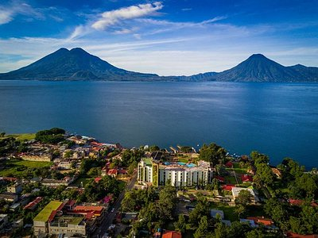

Panajachel
Panajachel, también conocido como Pana, es una ciudad encantadora situada a la orilla del Lago de Atitlán,
en el departamento de Sololá. El ambiente es impresionante por su belleza y la gente que es muy cordial.
Por su clima y tranquilidad lo hace un sitio perfecto para relajarse.
Cuenta con reservas naturales, diversidad de restaurantes,
vida nocturna, mercado de artesanías y escuelas de español.
Panajachel ofrece una vista espectacular de los volcanes de San Pedro, Tolimán y Atitlán.
Es punto de partida, mediante el servicio de lancha, para visitar diferentes
municipios de Santiago Atitlán, San Lucas Tolimán, San Antonio Palopó,
Santa Catarina Palopó, San Pedro La Laguna, entre otros.
Muchos de los habitantes de estos pueblos son descendientes de los grupos cakchiqueles y tzutuhiles.
Entre otros puntos de interés en Panajachel está la Calle Santander,
que se ha convertido en un punto de referencia donde se puede encontrar variedad de artesanías,
restaurantes, hoteles, y otros servicios que hacen del destino una experiencia placentera.
Tampoco se puede perder la Iglesia de San Francisco, la cual muestra la riqueza de la imaginería; el mercado
local, donde los pobladores venden sus productos agrícolas; y los museos y reservas naturales.
La ruta principal y más conocida es por la cabecera de Sololá,
situada a 140 kilómetros de la ciudad capital Guatemala, por la interamericana CA-1
pasando por Los Encuentros. Al llegar cerca del kilómetro 130,
cruzar a la izquierda hacia Sololá, y de allí a Panajachel (kilómetro 148).
